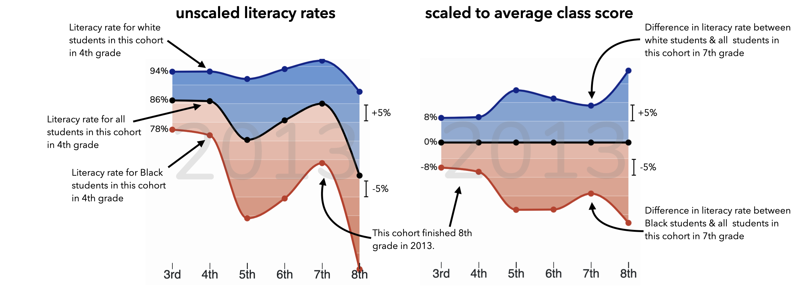

background
Virginia's public schools are responsible for the academic success of all students in the state. But many divisions may not be helping Black students achieve the same literacy rates as their white peers by the time they graduate 8th grade. Using data on passage rates for the Virginia SOL Reading test from the Virginia Department of Education as a proxy for literacy, we track cohorts of students from third to eighth grade and visually investigate the advantages and disadvantages of white and Black students as they learn to read.
how to read this viz
